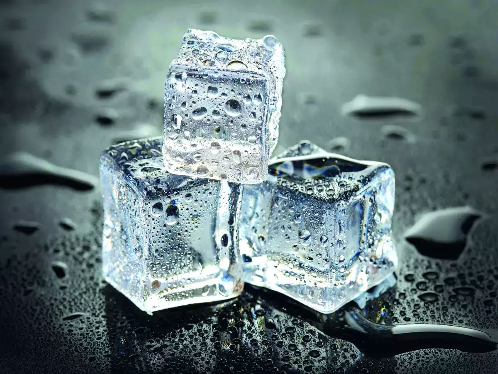

Ice

Description
This traditional staple is getting a makeover in today's recipe.
When liquidy water just doesn't do it for you anymore, try this summer favorite to put a smile on everyone's face.
Ingredients
- Water
- Refrigerator with freezing compartment
- Something to hold the water
- Good standing with the electric company
Steps
- Empty loose water into your chosen container
- Carefully insert container into freezing compartment
- Remove previously frozen ice
- Enjoy in drinks or by itself (makes a great school lunch snack!)